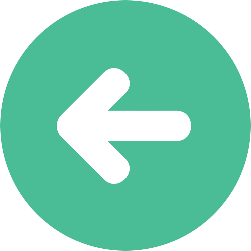
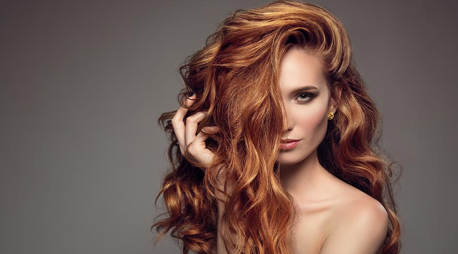
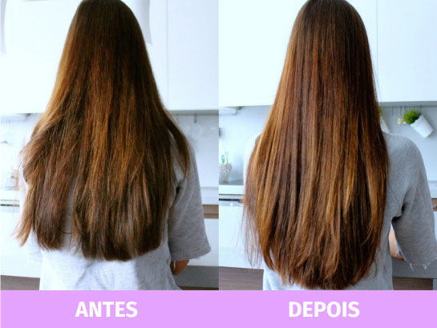
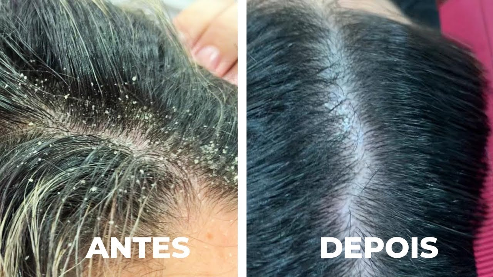

Centro Capilar
O Centro Capilar foi desenvolvido para melhor diagnosticar e tratar problemas capilares com tratamentos personalizados e equipamentos inovadores como: maquinário para hidratação e revitalização dos fios, infusões de medicamentos no couro cabeludo através da intradermoterapia, led capilar e tricoscopia. Os protocolos são exclusivos para cada tipo de cabelo e patologias.
- – Revitalização dos fios
- – Crescimento capilar
- – Queda
- – Tratamento para caspa
- – Excesso de oleosidade
- – Patologias do couro cabeludo




